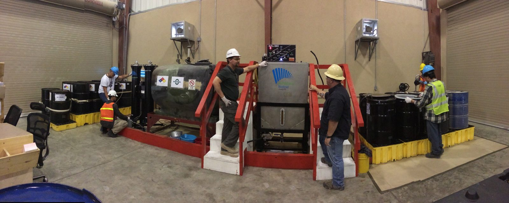

Clear enquiries
Customers can explain what material they need and what type of transport support they are looking for.
Information for manufacturers and business customers
This page helps manufacturers and other business customers understand how they can communicate with NCS.

Potential customers may include businesses involved in soap production, biodiesel, cosmetics, chemicals and other production processes where suitable fats or oils may be useful.
NCS can help by being a communication and transport link between suppliers and these industrial customers.
Customers can explain what material they need and what type of transport support they are looking for.
The website supports long-term B2B communication and trust between the company and potential customers.
The website gives one organised place to view services, process information and contact details.
Soap makers use fats and oils as raw materials. Suitable animal fats and recovered oils can be a useful input when they meet the manufacturer's quality requirements.
Used cooking oil is a well-known feedstock for biodiesel. A reliable collection and transport link helps producers receive a steady supply of recovered oil.
Some cosmetic and personal care products use fats and oils as ingredients. Customers in this field will have strict quality needs, which we would discuss before any supply.
Recovered fats and oils may also be used in other chemical and industrial processes. Tell us what you need and we will explain what transport and supply support is possible.